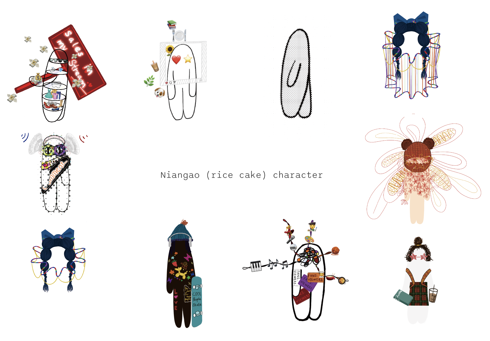
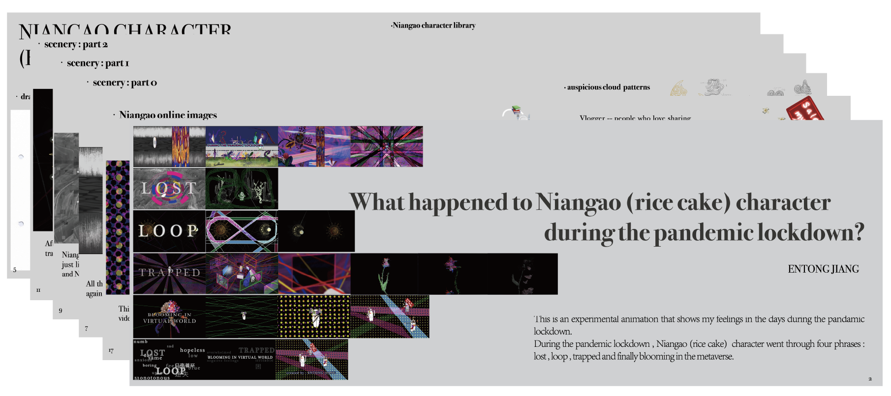

This is an experimental animation that shows my feelings in the days during the pandamic lockdown. During the pandemic lockdown , Niangao (rice cake) character went through four phrases : lost , loop , trapped and finally blooming in the metaverse.

